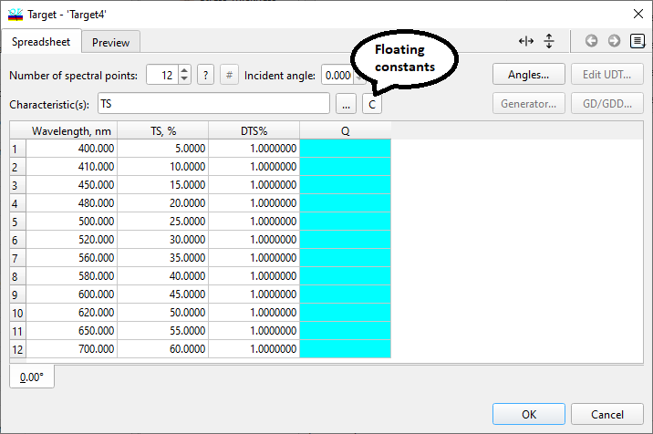
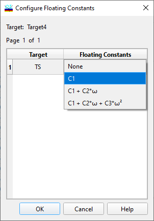

Floating Constant Targets
Floating Constant Targets
Navigation: OptiLayer Menu Commands > Data Menu > Target Editor >
Floating Constant Targets
` <idh_spectral_characteristics.html>`__ ` <target_editor.html>`__ ` <userdefinedtargeteditor.html>`__
Using Floating Constants allows you to relax target requirements. This means that the deviation of spectral characteristics from target specifications can be C1, or C1 + C2*ω, or even C1 + C2*ω + C3*ω2.

After clicking the “C” button, the next dialog will be displayed:

For each of the target characteristics already available in the main Target Editor, you can specify additional floating constant settings. The default setting is None. In the example given (a 50% beamsplitter), the specification of C1 floating constant means that the transmittance TS should be constant, but it can take any value, not necessarily 50%.
The more complex floating constant types C1 + C2*ω, or even C1 + C2*ω + C3*ω2 are useful for phase, group delay (GD), and group delay dispersion (GDD) targets.